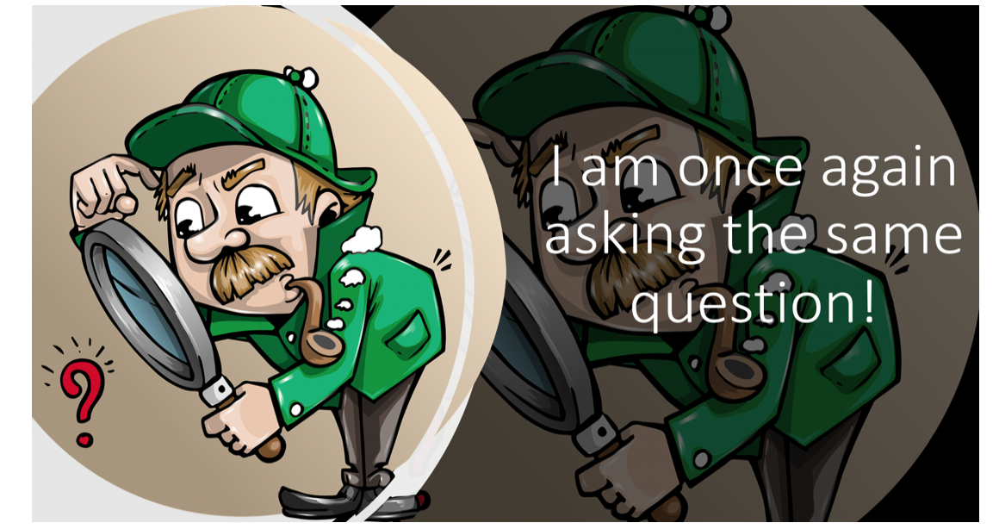
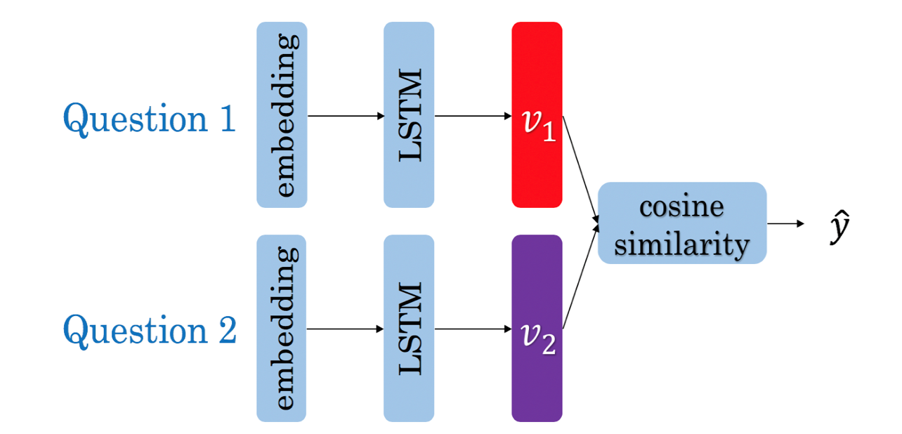
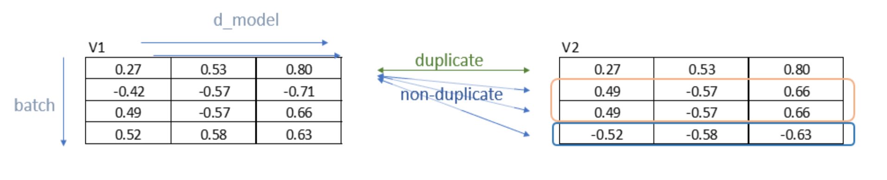
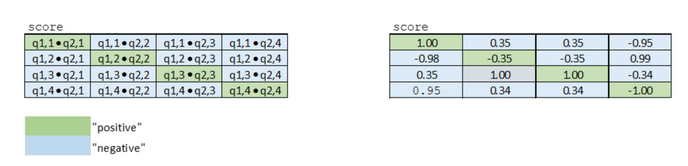

Assignment 4: Question duplicates
Welcome to the fourth assignment of course 3. In this assignment you will explore Siamese networks applied to natural language processing. You will further explore the fundamentals of Trax and you will be able to implement a more complicated structure using it. By completing this assignment, you will learn how to implement models with different architectures.
Outline
- Overview
- Part 1: Importing the Data
- Part 2: Defining the Siamese model
- Part 3: Training
- Part 4: Evaluation
- Part 5: Testing with your own questions
- On Siamese networks
Overview
In this assignment, concretely you will:
- Learn about Siamese networks
- Understand how the triplet loss works
- Understand how to evaluate accuracy
- Use cosine similarity between the model’s outputted vectors
- Use the data generator to get batches of questions
- Predict using your own model
By now, you are familiar with trax and know how to make use of classes to define your model. We will start this homework by asking you to preprocess the data the same way you did in the previous assignments. After processing the data you will build a classifier that will allow you to identify whether to questions are the same or not.

You will process the data first and then pad in a similar way you have done in the previous assignment. Your model will take in the two question embeddings, run them through an LSTM, and then compare the outputs of the two sub networks using cosine similarity. Before taking a deep dive into the model, start by importing the data set.
Part 1: Importing the Data
1.1 Loading in the data
You will be using the Quora question answer dataset to build a model that could identify similar questions. This is a useful task because you don’t want to have several versions of the same question posted. Several times when teaching I end up responding to similar questions on piazza, or on other community forums. This data set has been labeled for you. Run the cell below to import some of the packages you will be using.
1 | import os |
Notice that for this assignment Trax’s numpy is referred to as fastnp, while regular numpy is referred to as np.
You will now load in the data set. We have done some preprocessing for you. If you have taken the deeplearning specialization, this is a slightly different training method than the one you have seen there. If you have not, then don’t worry about it, we will explain everything.
1 | data = pd.read_csv("questions.csv") |
Number of question pairs: 404351
| id | qid1 | qid2 | question1 | question2 | is_duplicate | |
|---|---|---|---|---|---|---|
| 0 | 0 | 1 | 2 | What is the step by step guide to invest in sh... | What is the step by step guide to invest in sh... | 0 |
| 1 | 1 | 3 | 4 | What is the story of Kohinoor (Koh-i-Noor) Dia... | What would happen if the Indian government sto... | 0 |
| 2 | 2 | 5 | 6 | How can I increase the speed of my internet co... | How can Internet speed be increased by hacking... | 0 |
| 3 | 3 | 7 | 8 | Why am I mentally very lonely? How can I solve... | Find the remainder when [math]23^{24}[/math] i... | 0 |
| 4 | 4 | 9 | 10 | Which one dissolve in water quikly sugar, salt... | Which fish would survive in salt water? | 0 |
We first split the data into a train and test set. The test set will be used later to evaluate our model.
1 | N_train = 300000 |
Train set: 300000 Test set: 10240
As explained in the lectures, we select only the question pairs that are duplicate to train the model.
We build two batches as input for the Siamese network and we assume that question $q1_i$ (question $i$ in the first batch) is a duplicate of $q2_i$ (question $i$ in the second batch), but all other questions in the second batch are not duplicates of $q1_i$.
The test set uses the original pairs of questions and the status describing if the questions are duplicates.
1 | td_index = (data_train['is_duplicate'] == 1).to_numpy() |
number of duplicate questions: 111486
indexes of first ten duplicate questions: [5, 7, 11, 12, 13, 15, 16, 18, 20, 29]
1 | print(data_train['question1'][5]) # Example of question duplicates (first one in data) |
Astrology: I am a Capricorn Sun Cap moon and cap rising...what does that say about me?
I'm a triple Capricorn (Sun, Moon and ascendant in Capricorn) What does this say about me?
is_duplicate: 1
1 | Q1_train_words = np.array(data_train['question1'][td_index]) |
Above, you have seen that you only took the duplicated questions for training our model.
You did so on purpose, because the data generator will produce batches $([q1_1, q1_2, q1_3, …]$, $[q2_1, q2_2,q2_3, …])$ where $q1_i$ and $q2_k$ are duplicate if and only if $i = k$.
Let’s print to see what your data looks like.
1 | print('TRAINING QUESTIONS:\n') |
TRAINING QUESTIONS:
Question 1: Astrology: I am a Capricorn Sun Cap moon and cap rising...what does that say about me?
Question 2: I'm a triple Capricorn (Sun, Moon and ascendant in Capricorn) What does this say about me?
Question 1: What would a Trump presidency mean for current international master’s students on an F1 visa?
Question 2: How will a Trump presidency affect the students presently in US or planning to study in US?
TESTING QUESTIONS:
Question 1: How do I prepare for interviews for cse?
Question 2: What is the best way to prepare for cse?
is_duplicate = 0
You will now encode each word of the selected duplicate pairs with an index.
Given a question, you can then just encode it as a list of numbers.
First you tokenize the questions using nltk.word_tokenize.
You need a python default dictionary which later, during inference, assigns the values $0$ to all Out Of Vocabulary (OOV) words.
Then you encode each word of the selected duplicate pairs with an index. Given a question, you can then just encode it as a list of numbers.
1 | #create arrays |
1 | # Building the vocabulary with the train set (this might take a minute) |
The length of the vocabulary is: 36268
1 | print(vocab['<PAD>']) |
1
2
0
1 | for idx in range(len(Q1_test_words)): |
1 | print('Train set has reduced to: ', len(Q1_train) ) |
Train set has reduced to: 111486
Test set length: 10240
1.2 Converting a question to a tensor
You will now convert every question to a tensor, or an array of numbers, using your vocabulary built above.
1 | # Converting questions to array of integers |
1 | print('first question in the train set:\n') |
first question in the train set:
Astrology: I am a Capricorn Sun Cap moon and cap rising...what does that say about me?
encoded version:
[2, 3, 4, 5, 6, 7, 8, 9, 10, 11, 12, 13, 14, 15, 16, 17, 18, 19, 20, 21]
first question in the test set:
How do I prepare for interviews for cse?
encoded version:
[32, 38, 4, 107, 65, 1015, 65, 11509, 21]
You will now split your train set into a training/validation set so that you can use it to train and evaluate your Siamese model.
1 | # Splitting the data |
Number of duplicate questions: 111486
The length of the training set is: 89188
The length of the validation set is: 22298
1.3 Understanding the iterator
Most of the time in Natural Language Processing, and AI in general we use batches when training our data sets. If you were to use stochastic gradient descent with one example at a time, it will take you forever to build a model. In this example, we show you how you can build a data generator that takes in $Q1$ and $Q2$ and returns a batch of size batch_size in the following format $([q1_1, q1_2, q1_3, …]$, $[q2_1, q2_2,q2_3, …])$. The tuple consists of two arrays and each array has batch_size questions. Again, $q1_i$ and $q2_i$ are duplicates, but they are not duplicates with any other elements in the batch.
The command 1
2
3
4
5
6
7
8
9
10
11
12
13
14
15
16
17
18
19
20
21
22
23
24
25
26
27
28
29
30
31
32
33
34
35
36
37
38
39
40
41
42
43
44
45
46
47
48
49
50
51
52
53
54
55
56
57
58
59
60
61
62
63
64
65
66
67
68
69
70
71
72
73
74
75
76
77
78
79
80
81
82
83
84
85
86
87
88
<a name='ex01'></a>
### Exercise 01
**Instructions:**
Implement the data generator below. Here are some things you will need.
- While true loop.
- if `index >= len_Q1`, set the `idx` to $0$.
- The generator should return shuffled batches of data. To achieve this without modifying the actual question lists, a list containing the indexes of the questions is created. This list can be shuffled and used to get random batches everytime the index is reset.
- Append elements of $Q1$ and $Q2$ to `input1` and `input2` respectively.
- if `len(input1) == batch_size`, determine `max_len` as the longest question in `input1` and `input2`. Ceil `max_len` to a power of $2$ (for computation purposes) using the following command: `max_len = 2**int(np.ceil(np.log2(max_len)))`.
- Pad every question by `vocab['<PAD>']` until you get the length `max_len`.
- Use yield to return `input1, input2`.
- Don't forget to reset `input1, input2` to empty arrays at the end (data generator resumes from where it last left).
```python
# UNQ_C1 (UNIQUE CELL IDENTIFIER, DO NOT EDIT)
# GRADED FUNCTION: data_generator
def data_generator(Q1, Q2, batch_size, pad=1, shuffle=True):
"""Generator function that yields batches of data
Args:
Q1 (list): List of transformed (to tensor) questions.
Q2 (list): List of transformed (to tensor) questions.
batch_size (int): Number of elements per batch.
pad (int, optional): Pad character from the vocab. Defaults to 1.
shuffle (bool, optional): If the batches should be randomnized or not. Defaults to True.
Yields:
tuple: Of the form (input1, input2) with types (numpy.ndarray, numpy.ndarray)
NOTE: input1: inputs to your model [q1a, q2a, q3a, ...] i.e. (q1a,q1b) are duplicates
input2: targets to your model [q1b, q2b,q3b, ...] i.e. (q1a,q2i) i!=a are not duplicates
"""
input1 = []
input2 = []
idx = 0
len_q = len(Q1)
question_indexes = [*range(len_q)]
if shuffle:
rnd.shuffle(question_indexes)
### START CODE HERE (Replace instances of 'None' with your code) ###
while True:
if idx >= len_q:
# if idx is greater than or equal to len_q, set idx accordingly
# (Hint: look at the instructions above)
idx = 0
# shuffle to get random batches if shuffle is set to True
if shuffle:
rnd.shuffle(question_indexes)
# get questions at the `question_indexes[idx]` position in Q1 and Q2
q1 = Q1[question_indexes[idx]]
q2 = Q2[question_indexes[idx]]
# increment idx by 1
idx += 1
# append q1
input1.append(q1)
# append q2
input2.append(q2)
if len(input1) == batch_size:
# determine max_len as the longest question in input1 & input 2
# Hint: use the `max` function.
# take max of input1 & input2 and then max out of the two of them.
max_len = max(max([len(_) for _ in input1]),max([len(_) for _ in input2]))
# pad to power-of-2 (Hint: look at the instructions above)
max_len = 2**int(np.ceil(np.log2(max_len)))
b1 = []
b2 = []
for q1, q2 in zip(input1, input2):
# add [pad] to q1 until it reaches max_len
q1 = q1 + [pad] * (max_len - len(q1))
# add [pad] to q2 until it reaches max_len
q2 = q2 + [pad] * (max_len - len(q2))
# append q1
b1.append(q1)
# append q2
b2.append(q2)
# use b1 and b2
yield np.array(b1), np.array(b2)
### END CODE HERE ###
# reset the batches
input1, input2 = [], [] # reset the batches
1 | batch_size = 2 |
First questions :
[[ 30 87 78 134 2132 1981 28 78 594 21 1 1 1 1
1 1]
[ 30 55 78 3541 1460 28 56 253 21 1 1 1 1 1
1 1]]
Second questions :
[[ 30 156 78 134 2132 9508 21 1 1 1 1 1 1 1
1 1]
[ 30 156 78 3541 1460 131 56 253 21 1 1 1 1 1
1 1]]
Note: The following expected output is valid only if you run the above test cell _once_ (first time). The output will change on each execution.
If you think your implementation is correct and it is not matching the output, make sure to restart the kernel and run all the cells from the top again.
Expected Output:1
2
3
4
5
6
7
8
9
10
11First questions :
[[ 30 87 78 134 2132 1981 28 78 594 21 1 1 1 1
1 1]
[ 30 55 78 3541 1460 28 56 253 21 1 1 1 1 1
1 1]]
Second questions :
[[ 30 156 78 134 2132 9508 21 1 1 1 1 1 1 1
1 1]
[ 30 156 78 3541 1460 131 56 253 21 1 1 1 1 1
1 1]]
Now that you have your generator, you can just call it and it will return tensors which correspond to your questions in the Quora data set.
Now you can go ahead and start building your neural network.
Part 2: Defining the Siamese model
2.1 Understanding Siamese Network
A Siamese network is a neural network which uses the same weights while working in tandem on two different input vectors to compute comparable output vectors.The Siamese network you are about to implement looks like this:

You get the question embedding, run it through an LSTM layer, normalize $v_1$ and $v_2$, and finally use a triplet loss (explained below) to get the corresponding cosine similarity for each pair of questions. As usual, you will start by importing the data set. The triplet loss makes use of a baseline (anchor) input that is compared to a positive (truthy) input and a negative (falsy) input. The distance from the baseline (anchor) input to the positive (truthy) input is minimized, and the distance from the baseline (anchor) input to the negative (falsy) input is maximized. In math equations, you are trying to maximize the following.
$A$ is the anchor input, for example $q1_1$, $P$ the duplicate input, for example, $q2_1$, and $N$ the negative input (the non duplicate question), for example $q2_2$.
$\alpha$ is a margin; you can think about it as a safety net, or by how much you want to push the duplicates from the non duplicates.
Exercise 02
Instructions: Implement the Siamese function below. You should be using all the objects explained below.
To implement this model, you will be using trax. Concretely, you will be using the following functions.
tl.Serial: Combinator that applies layers serially (by function composition) allows you set up the overall structure of the feedforward. docs / source code- You can pass in the layers as arguments to
Serial, separated by commas. - For example:
tl.Serial(tl.Embeddings(...), tl.Mean(...), tl.Dense(...), tl.LogSoftmax(...))
- You can pass in the layers as arguments to
tl.Embedding: Maps discrete tokens to vectors. It will have shape (vocabulary length X dimension of output vectors). The dimension of output vectors (also called d_feature) is the number of elements in the word embedding. docs / source codetl.Embedding(vocab_size, d_feature).vocab_sizeis the number of unique words in the given vocabulary.d_featureis the number of elements in the word embedding (some choices for a word embedding size range from 150 to 300, for example).
tl.LSTMThe LSTM layer. It leverages another Trax layer calledLSTMCell. The number of units should be specified and should match the number of elements in the word embedding. docs / source codetl.LSTM(n_units)Builds an LSTM layer of n_units.
tl.Mean: Computes the mean across a desired axis. Mean uses one tensor axis to form groups of values and replaces each group with the mean value of that group. docs / source codetl.Mean(axis=1)mean over columns.
tl.FnLayer with no weights that applies the function f, which should be specified using a lambda syntax. docs / source doce- $x$ -> This is used for cosine similarity.
tl.Fn('Normalize', lambda x: normalize(x))Returns a layer with no weights that applies the functionf
tl.parallel: It is a combinator layer (likeSerial) that applies a list of layers in parallel to its inputs. docs / source code
1 | # UNQ_C2 (UNIQUE CELL IDENTIFIER, DO NOT EDIT) |
Setup the Siamese network model
1 | # check your model |
Parallel_in2_out2[
Serial[
Embedding_41699_128
LSTM_128
Mean
Normalize
]
Serial[
Embedding_41699_128
LSTM_128
Mean
Normalize
]
]
Expected output:
1 | Parallel_in2_out2[ |
2.2 Hard Negative Mining
You will now implement the TripletLoss.
As explained in the lecture, loss is composed of two terms. One term utilizes the mean of all the non duplicates, the second utilizes the closest negative. Our loss expression is then:
\begin{align}
\mathcal{Loss_1(A,P,N)} &=\max \left( -cos(A,P) + mean_{neg} +\alpha, 0\right) \\
\mathcal{Loss_2(A,P,N)} &=\max \left( -cos(A,P) + closest_{neg} +\alpha, 0\right) \\
\mathcal{Loss(A,P,N)} &= mean(Loss_1 + Loss_2) \\
\end{align}
Further, two sets of instructions are provided. The first set provides a brief description of the task. If that set proves insufficient, a more detailed set can be displayed.
Exercise 03
Instructions (Brief): Here is a list of things you should do:
- As this will be run inside trax, use
fastnp.xyzwhen using anyxyznumpy function - Use
fastnp.dotto calculate the similarity matrix $v_1v_2^T$ of dimensionbatch_sizexbatch_size - Take the score of the duplicates on the diagonal
fastnp.diagonal - Use the
traxfunctionsfastnp.eyeandfastnp.maximumfor the identity matrix and the maximum.
We’ll describe the algorithm using a detailed example. Below, V1, V2 are the output of the normalization blocks in our model. Here we will use a batch_size of 4 and a d_model of 3. As explained in lecture, the inputs, Q1, Q2 are arranged so that corresponding inputs are duplicates while non-corresponding entries are not. The outputs will have the same pattern.

This testcase arranges the outputs, v1,v2, to highlight different scenarios. Here, the first two outputs V1[0], V2[0] match exactly - so the model is generating the same vector for Q1[0] and Q2[0] inputs. The second outputs differ, circled in orange, we set, V2[1] is set to match V2[2], simulating a model which is generating very poor results. V1[3] and V2[3] match exactly again while V1[4] and V2[4] are set to be exactly wrong - 180 degrees from each other, circled in blue.
The first step is to compute the cosine similarity matrix or score in the code. As explained in lecture, this is This is generated with fastnp.dot.

The clever arrangement of inputs creates the data needed for positive and negative examples without having to run all pair-wise combinations. Because Q1[n] is a duplicate of only Q2[n], other combinations are explicitly created negative examples or Hard Negative examples. The matrix multiplication efficiently produces the cosine similarity of all positive/negative combinations as shown above on the left side of the diagram. ‘Positive’ are the results of duplicate examples and ‘negative’ are the results of explicitly created negative examples. The results for our test case are as expected, V1[0]V2[0] match producing ‘1’ while our other ‘positive’ cases (in green) don’t match well, as was arranged. The V2[2] was set to match V1[3] producing a poor match at score[2,2] and an undesired ‘negative’ case of a ‘1’ shown in grey.
With the similarity matrix (score) we can begin to implement the loss equations. First, we can extract by utilizing fastnp.diagonal. The goal is to grab all the green entries in the diagram above. This is positive in the code.
Next, we will create the closest_negative. This is the nonduplicate entry in V2 that is closest (has largest cosine similarity) to an entry in V1. Each row, n, of score represents all comparisons of the results of Q1[n] vs Q2[x] within a batch. A specific example in our testcase is row score[2,:]. It has the cosine similarity of V1[2] and V2[x]. The closest_negative, as was arranged, is V2[2] which has a score of 1. This is the maximum value of the ‘negative’ entries (blue entries in the diagram).
To implement this, we need to pick the maximum entry on a row of score, ignoring the ‘positive’/green entries. To avoid selecting the ‘positive’/green entries, we can make them larger negative numbers. Multiply fastnp.eye(batch_size) with 2.0 and subtract it out of scores. The result is negative_without_positive. Now we can use fastnp.max, row by row (axis=1), to select the maximum which is closest_negative.
Next, we’ll create mean_negative. As the name suggests, this is the mean of all the ‘negative’/blue values in score on a row by row basis. We can use fastnp.eye(batch_size) and a constant, this time to create a mask with zeros on the diagonal. Element-wise multiply this with score to get just the ‘negative values. This is negative_zero_on_duplicate in the code. Compute the mean by using fastnp.sum on negative_zero_on_duplicate for axis=1 and divide it by (batch_size - 1) . This is mean_negative.
Now, we can compute loss using the two equations above and fastnp.maximum. This will form triplet_loss1 and triplet_loss2.
triple_loss is the fastnp.mean of the sum of the two individual losses.
Once you have this code matching the expected results, you can clip out the section between ### START CODE HERE and ### END CODE HERE it out and insert it into TripletLoss below.
<\details>
1 | # UNQ_C3 (UNIQUE CELL IDENTIFIER, DO NOT EDIT) |
1 | v1 = np.array([[0.26726124, 0.53452248, 0.80178373],[0.5178918 , 0.57543534, 0.63297887]]) |
Triplet Loss: 0.5
Expected Output:1
2
3
4
5
6
7
8
9
10
11Triplet Loss: 0.5
```
To make a layer out of a function with no trainable variables, use `tl.Fn`.
```python
from functools import partial
def TripletLoss(margin=0.25):
triplet_loss_fn = partial(TripletLossFn, margin=margin)
return tl.Fn('TripletLoss', triplet_loss_fn)
Part 3: Training
Now you are going to train your model. As usual, you have to define the cost function and the optimizer. You also have to feed in the built model. Before, going into the training, we will use a special data set up. We will define the inputs using the data generator we built above. The lambda function acts as a seed to remember the last batch that was given. Run the cell below to get the question pairs inputs.
1 | batch_size = 256 |
train_Q1.shape (89188,)
val_Q1.shape (22298,)
3.1 Training the model
You will now write a function that takes in your model and trains it. To train your model you have to decide how many times you want to iterate over the entire data set; each iteration is defined as an epoch. For each epoch, you have to go over all the data, using your training iterator.
Exercise 04
Instructions: Implement the train_model below to train the neural network above. Here is a list of things you should do, as already shown in lecture 7:
- Create
TrainTaskandEvalTask - Create the training loop
trax.supervised.training.Loop - Pass in the following depending on the context (train_task or eval_task):
labeled_data=generatormetrics=[TripletLoss()],loss_layer=TripletLoss()optimizer=trax.optimizers.Adamwith learning rate of 0.01lr_schedule=lr_schedule,output_dir=output_dir
You will be using your triplet loss function with Adam optimizer. Please read the trax documentation to get a full understanding.
This function should return a training.Loop object. To read more about this check the docs.
1 | lr_schedule = trax.lr.warmup_and_rsqrt_decay(400, 0.01) |
1 | train_steps = 5 |
Step 1: train TripletLoss | 0.49954823
Step 1: eval TripletLoss | 0.49950948
The model was only trained for 5 steps due to the constraints of this environment. For the rest of the assignment you will be using a pretrained model but now you should understand how the training can be done using Trax.
Part 4: Evaluation
4.1 Evaluating your siamese network
In this section you will learn how to evaluate a Siamese network. You will first start by loading a pretrained model and then you will use it to predict.
1 | # Loading in the saved model |
4.2 Classify
To determine the accuracy of the model, we will utilize the test set that was configured earlier. While in training we used only positive examples, the test data, Q1_test, Q2_test and y_test, is setup as pairs of questions, some of which are duplicates some are not.
This routine will run all the test question pairs through the model, compute the cosine simlarity of each pair, threshold it and compare the result to y_test - the correct response from the data set. The results are accumulated to produce an accuracy.
Exercise 05
Instructions
- Loop through the incoming data in batch_size chunks
- Use the data generator to load q1, q2 a batch at a time. Don’t forget to set shuffle=False!
- copy a batch_size chunk of y into y_test
- compute v1, v2 using the model
- for each element of the batch
- compute the cos similarity of each pair of entries, v1[j],v2[j] - determine if d > threshold - increment accuracy if that result matches the expected results (y_test[j]) - compute the final accuracy and return
Due to some limitations of this environment, running classify multiple times may result in the kernel failing. If that happens Restart Kernal & clear output and then run from the top. During development, consider using a smaller set of data to reduce the number of calls to model().
1 | # UNQ_C5 (UNIQUE CELL IDENTIFIER, DO NOT EDIT) |
1 | # this takes around 1 minute |
Accuracy 0.69091797
Expected Result
Accuracy ~0.69
Part 5: Testing with your own questions
In this section you will test the model with your own questions. You will write a function predict which takes two questions as input and returns $1$ or $0$ depending on whether the question pair is a duplicate or not.
But first, we build a reverse vocabulary that allows to map encoded questions back to words:
Write a function predictthat takes in two questions, the model, and the vocabulary and returns whether the questions are duplicates ($1$) or not duplicates ($0$) given a similarity threshold.
Exercise 06
Instructions:
- Tokenize your question using
nltk.word_tokenize - Create Q1,Q2 by encoding your questions as a list of numbers using vocab
- pad Q1,Q2 with next(data_generator([Q1], [Q2],1,vocab[‘
‘])) - use model() to create v1, v2
- compute the cosine similarity (dot product) of v1, v2
- compute res by comparing d to the threshold
1 | # UNQ_C6 (UNIQUE CELL IDENTIFIER, DO NOT EDIT) |
1 | # Feel free to try with your own questions |
Q1 = [[585 76 4 46 53 21 1 1]]
Q2 = [[ 585 33 4 46 53 7280 21 1]]
d = [[0.8811324]]
res = [[ True]]
DeviceArray([[ True]], dtype=bool)
Expected Output
If input is:1
2question1 = "When will I see you?"
question2 = "When can I see you again?"
Output is (d may vary a bit):1
2
3
4
5Q1 = [[585 76 4 46 53 21 1 1]]
Q2 = [[ 585 33 4 46 53 7280 21 1]]
d = 0.88113236
res = True
True
1 | # Feel free to try with your own questions |
Q1 = [[ 443 1145 3159 1169 78 29017 21 1]]
Q2 = [[ 443 1145 60 15302 28 78 7431 21]]
d = [[0.477536]]
res = [[False]]
DeviceArray([[False]], dtype=bool)
Expected output
If input is:1
2question1 = "Do they enjoy eating the dessert?"
question2 = "Do they like hiking in the desert?"
Output (d may vary a bit):
1 | Q1 = [[ 443 1145 3159 1169 78 29017 21 1]] |
You can see that the Siamese network is capable of catching complicated structures. Concretely it can identify question duplicates although the questions do not have many words in common.
On Siamese networks
Siamese networks are important and useful. Many times there are several questions that are already asked in quora, or other platforms and you can use Siamese networks to avoid question duplicates.
Congratulations, you have now built a powerful system that can recognize question duplicates. In the next course we will use transformers for machine translation, summarization, question answering, and chatbots.
1 |